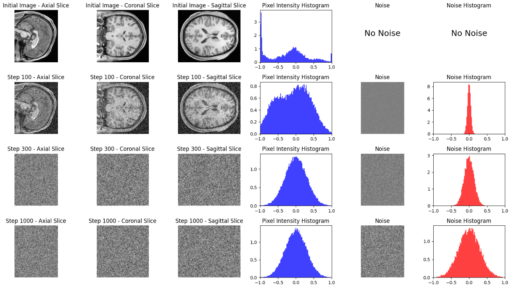

<!DOCTYPE html>
<html lang="en" dir="auto">

<head><script src="/livereload.js?mindelay=10&amp;v=2&amp;port=1313&amp;path=livereload" data-no-instant defer></script><meta charset="utf-8">
<meta http-equiv="X-UA-Compatible" content="IE=edge">
<meta name="viewport" content="width=device-width, initial-scale=1, shrink-to-fit=no">
<meta name="robots" content="noindex, nofollow">
<title>MRI Super-Resolution | My New Hugo Site</title>
<meta name="keywords" content="">
<meta name="description" content="This repository contains code, data, and utilities for performing super-resolution on MRI images, specifically focused on improving the resolution from 1.5T to 3T MRI scans. The project leverages diffusion models and other machine learning techniques.
Demo Low resolution 1.5T MRI (3mm isotropic voxel size) vs High resolution 3T MRI (1.6mm isotropic voxel size)
Cosine Noise Scheduler Table of Contents Project Structure Installation Usage Data Sample Data Utilities License Project Structure assets/: Contains auxiliary files, such as videos or images used in the project.">
<meta name="author" content="">
<link rel="canonical" href="http://localhost:1313/mri-super-resolution/">
<link crossorigin="anonymous" href="/assets/css/stylesheet.fc220c15db4aef0318bbf30adc45d33d4d7c88deff3238b23eb255afdc472ca6.css" integrity="sha256-/CIMFdtK7wMYu/MK3EXTPU18iN7/MjiyPrJVr9xHLKY=" rel="preload stylesheet" as="style">
<link rel="icon" href="http://localhost:1313/favicon.ico">
<link rel="icon" type="image/png" sizes="16x16" href="http://localhost:1313/favicon-16x16.png">
<link rel="icon" type="image/png" sizes="32x32" href="http://localhost:1313/favicon-32x32.png">
<link rel="apple-touch-icon" href="http://localhost:1313/apple-touch-icon.png">
<link rel="mask-icon" href="http://localhost:1313/safari-pinned-tab.svg">
<meta name="theme-color" content="#2e2e33">
<meta name="msapplication-TileColor" content="#2e2e33">
<link rel="alternate" hreflang="en" href="http://localhost:1313/mri-super-resolution/">
<noscript>
    <style>
        #theme-toggle,
        .top-link {
            display: none;
        }

    </style>
    <style>
        @media (prefers-color-scheme: dark) {
            :root {
                --theme: rgb(29, 30, 32);
                --entry: rgb(46, 46, 51);
                --primary: rgb(218, 218, 219);
                --secondary: rgb(155, 156, 157);
                --tertiary: rgb(65, 66, 68);
                --content: rgb(196, 196, 197);
                --code-block-bg: rgb(46, 46, 51);
                --code-bg: rgb(55, 56, 62);
                --border: rgb(51, 51, 51);
            }

            .list {
                background: var(--theme);
            }

            .list:not(.dark)::-webkit-scrollbar-track {
                background: 0 0;
            }

            .list:not(.dark)::-webkit-scrollbar-thumb {
                border-color: var(--theme);
            }
        }

    </style>
</noscript>
</head>

<body class="" id="top">
<script>
    if (localStorage.getItem("pref-theme") === "dark") {
        document.body.classList.add('dark');
    } else if (localStorage.getItem("pref-theme") === "light") {
        document.body.classList.remove('dark')
    } else if (window.matchMedia('(prefers-color-scheme: dark)').matches) {
        document.body.classList.add('dark');
    }

</script>

<header class="header">
    <nav class="nav">
        <div class="logo">
            <a href="http://localhost:1313/" accesskey="h" title="My New Hugo Site (Alt + H)">My New Hugo Site</a>
            <div class="logo-switches">
                <button id="theme-toggle" accesskey="t" title="(Alt + T)">
                    <svg id="moon" xmlns="http://www.w3.org/2000/svg" width="24" height="18" viewBox="0 0 24 24"
                        fill="none" stroke="currentColor" stroke-width="2" stroke-linecap="round"
                        stroke-linejoin="round">
                        <path d="M21 12.79A9 9 0 1 1 11.21 3 7 7 0 0 0 21 12.79z"></path>
                    </svg>
                    <svg id="sun" xmlns="http://www.w3.org/2000/svg" width="24" height="18" viewBox="0 0 24 24"
                        fill="none" stroke="currentColor" stroke-width="2" stroke-linecap="round"
                        stroke-linejoin="round">
                        <circle cx="12" cy="12" r="5"></circle>
                        <line x1="12" y1="1" x2="12" y2="3"></line>
                        <line x1="12" y1="21" x2="12" y2="23"></line>
                        <line x1="4.22" y1="4.22" x2="5.64" y2="5.64"></line>
                        <line x1="18.36" y1="18.36" x2="19.78" y2="19.78"></line>
                        <line x1="1" y1="12" x2="3" y2="12"></line>
                        <line x1="21" y1="12" x2="23" y2="12"></line>
                        <line x1="4.22" y1="19.78" x2="5.64" y2="18.36"></line>
                        <line x1="18.36" y1="5.64" x2="19.78" y2="4.22"></line>
                    </svg>
                </button>
            </div>
        </div>
        <ul id="menu">
        </ul>
    </nav>
</header>
<main class="main">

<article class="post-single">
  <header class="post-header">
    
    <h1 class="post-title entry-hint-parent">
      MRI Super-Resolution
    </h1>
    <div class="post-meta"><span title='2024-08-21 00:00:00 +0000 UTC'>August 21, 2024</span>

</div>
  </header> 
  <div class="post-content"><p>This repository contains code, data, and utilities for performing super-resolution on MRI images, specifically focused on improving the resolution from 1.5T to 3T MRI scans. The project leverages diffusion models and other machine learning techniques.</p>
<h2 id="demo">Demo<a hidden class="anchor" aria-hidden="true" href="#demo">#</a></h2>
<p>


<em>Low resolution 1.5T MRI (3mm isotropic voxel size) vs High resolution 3T MRI (1.6mm isotropic voxel size)</em></p>
<hr>
<h2 id="cosine-noise-scheduler">Cosine Noise Scheduler<a hidden class="anchor" aria-hidden="true" href="#cosine-noise-scheduler">#</a></h2>
<p>
</p>
<hr>
<h2 id="table-of-contents">Table of Contents<a hidden class="anchor" aria-hidden="true" href="#table-of-contents">#</a></h2>
<ul>
<li><a href="#project-structure">Project Structure</a></li>
<li><a href="#installation">Installation</a></li>
<li><a href="#usage">Usage</a></li>
<li><a href="#data">Data</a></li>
<li><a href="#sample-data">Sample Data</a></li>
<li><a href="#utilities">Utilities</a></li>
<li><a href="#license">License</a></li>
</ul>
<h2 id="project-structure">Project Structure<a hidden class="anchor" aria-hidden="true" href="#project-structure">#</a></h2>
<ul>
<li>
<p><strong>assets/</strong>: Contains auxiliary files, such as videos or images used in the project.</p>
<ul>
<li><code>mri_slices_combined-ezgif.com-video-to-gif-converter.avi</code>: A video file likely showing combined MRI slices.</li>
</ul>
</li>
<li>
<p><strong>data/</strong>: Contains the datasets used in the project.</p>
<ul>
<li><strong>Brats2020/</strong>: Dataset related to the BraTS 2020 competition, focusing on brain tumor segmentation.</li>
<li><strong>HCP/</strong>: Dataset from the Human Connectome Project (HCP), used for MRI data.</li>
<li><strong>MNIST/</strong>: Contains the MNIST dataset, possibly used for experimentation or model testing.</li>
</ul>
</li>
<li>
<p><strong>sample_data/</strong>: Contains sample data for testing or demo purposes.</p>
<ul>
<li><strong>Structural Preprocessed for 7T (1.6mm/59k mesh)</strong>: Preprocessed structural data intended for use with 7T MRI resolution.
<ul>
<li><code>100610_3T_Structural_1.6mm_preproc.zip</code>: A ZIP file containing the preprocessed data for 3T MRI.</li>
<li><code>100610_3T_Structural_1.6mm_preproc.zip.md5</code>: MD5 checksum for the ZIP file to verify its integrity.</li>
</ul>
</li>
</ul>
</li>
<li>
<p><strong>utils/</strong>: Utility scripts and notebooks for the project.</p>
<ul>
<li><code>DDPM.ipynb</code>: A Jupyter notebook for training or experimenting with the DDPM model.</li>
<li><code>diffusion_model_mnist.pth</code>: A pre-trained diffusion model on the MNIST dataset.</li>
<li><code>eda_notebook.ipynb</code>: An exploratory data analysis (EDA) notebook.</li>
<li><code>me.jpg</code>: An image file, possibly a personal photo or a sample image for testing.</li>
<li><code>mri_slices_combined.avi</code>: Another video file, likely related to MRI data visualization.</li>
<li><code>plot_t1w.py</code>: A Python script for plotting T1-weighted MRI images.</li>
</ul>
</li>
<li>
<p><strong>venv/</strong>: Virtual environment for managing project dependencies.</p>
</li>
</ul>
<h2 id="installation">Installation<a hidden class="anchor" aria-hidden="true" href="#installation">#</a></h2>
<p>To set up the environment for this project:</p>
<ol>
<li>Clone the repository:
```bash
git clone <a href="https://github.com/your-username/MRI-Super-Resolution.git">https://github.com/your-username/MRI-Super-Resolution.git</a>
```</li>
<li>Navigate to the project directory:
```bash
cd MRI-Super-Resolution
```</li>
<li>Create a virtual environment:
```bash
python3 -m venv venv
```</li>
<li>Activate the virtual environment:
```bash
source venv/bin/activate  # On Windows: venv\Scriptsctivate
```</li>
<li>Install the required packages:
```bash
pip install -r requirements.txt
```</li>
</ol>
<h2 id="usage">Usage<a hidden class="anchor" aria-hidden="true" href="#usage">#</a></h2>
<p>Instructions on how to run the notebooks, train models, and process the MRI data:</p>
<ol>
<li>
<p><strong>Training the Model:</strong>
Open <code>DDPM.ipynb</code> in Jupyter Notebook and run the cells to start training the diffusion model.</p>
</li>
<li>
<p><strong>Exploratory Data Analysis:</strong>
Use <code>eda_notebook.ipynb</code> to explore the dataset before training.</p>
</li>
<li>
<p><strong>Visualization:</strong>
Run <code>plot_t1w.py</code> to generate visualizations of T1-weighted MRI images.</p>
</li>
</ol>
<h2 id="data">Data<a hidden class="anchor" aria-hidden="true" href="#data">#</a></h2>
<ul>
<li><strong>Brats2020</strong>: Use for brain tumor segmentation tasks.</li>
<li><strong>HCP</strong>: Contains MRI data from the Human Connectome Project.</li>
<li><strong>MNIST</strong>: Can be used for model testing or as an additional dataset for experiments.</li>
</ul>
<h2 id="sample-data">Sample Data<a hidden class="anchor" aria-hidden="true" href="#sample-data">#</a></h2>
<p>Sample data under <code>sample_data/Structural Preprocessed for 7T</code> is provided to test the pipeline without downloading full datasets.</p>
<h2 id="utilities">Utilities<a hidden class="anchor" aria-hidden="true" href="#utilities">#</a></h2>
<ul>
<li><strong>Scripts and notebooks</strong>: Utility files provided in the <code>utils/</code> directory to assist with model training, data exploration, and visualization.</li>
</ul>
<h2 id="license">License<a hidden class="anchor" aria-hidden="true" href="#license">#</a></h2>
<p>This project is licensed under the MIT License - see the LICENSE file for details.</p>


  </div>

  <footer class="post-footer">
    <ul class="post-tags">
    </ul>
  </footer>
</article>
    </main>
    
<footer class="footer">
        <span>&copy; 2024 <a href="http://localhost:1313/">My New Hugo Site</a></span> · 

    <span>
        Powered by
        <a href="https://gohugo.io/" rel="noopener noreferrer" target="_blank">Hugo</a> &
        <a href="https://github.com/adityatelange/hugo-PaperMod/" rel="noopener" target="_blank">PaperMod</a>
    </span>
</footer>
<a href="#top" aria-label="go to top" title="Go to Top (Alt + G)" class="top-link" id="top-link" accesskey="g">
    <svg xmlns="http://www.w3.org/2000/svg" viewBox="0 0 12 6" fill="currentColor">
        <path d="M12 6H0l6-6z" />
    </svg>
</a>

<script>
    let menu = document.getElementById('menu')
    if (menu) {
        menu.scrollLeft = localStorage.getItem("menu-scroll-position");
        menu.onscroll = function () {
            localStorage.setItem("menu-scroll-position", menu.scrollLeft);
        }
    }

    document.querySelectorAll('a[href^="#"]').forEach(anchor => {
        anchor.addEventListener("click", function (e) {
            e.preventDefault();
            var id = this.getAttribute("href").substr(1);
            if (!window.matchMedia('(prefers-reduced-motion: reduce)').matches) {
                document.querySelector(`[id='${decodeURIComponent(id)}']`).scrollIntoView({
                    behavior: "smooth"
                });
            } else {
                document.querySelector(`[id='${decodeURIComponent(id)}']`).scrollIntoView();
            }
            if (id === "top") {
                history.replaceState(null, null, " ");
            } else {
                history.pushState(null, null, `#${id}`);
            }
        });
    });

</script>
<script>
    var mybutton = document.getElementById("top-link");
    window.onscroll = function () {
        if (document.body.scrollTop > 800 || document.documentElement.scrollTop > 800) {
            mybutton.style.visibility = "visible";
            mybutton.style.opacity = "1";
        } else {
            mybutton.style.visibility = "hidden";
            mybutton.style.opacity = "0";
        }
    };

</script>
<script>
    document.getElementById("theme-toggle").addEventListener("click", () => {
        if (document.body.className.includes("dark")) {
            document.body.classList.remove('dark');
            localStorage.setItem("pref-theme", 'light');
        } else {
            document.body.classList.add('dark');
            localStorage.setItem("pref-theme", 'dark');
        }
    })

</script>
</body>

</html>
